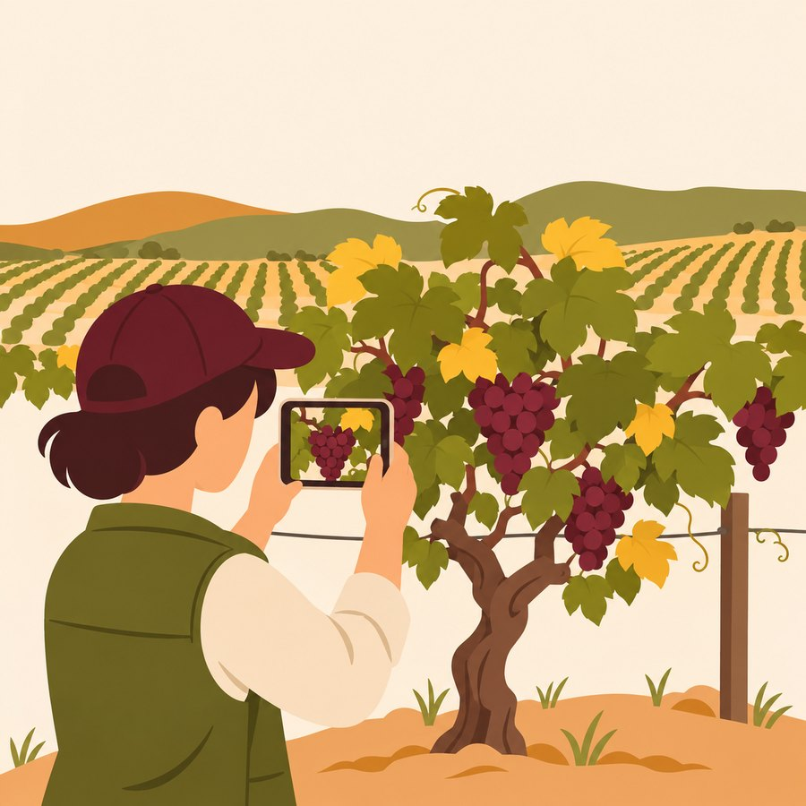
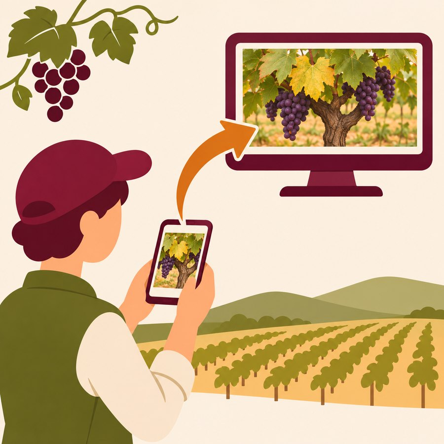
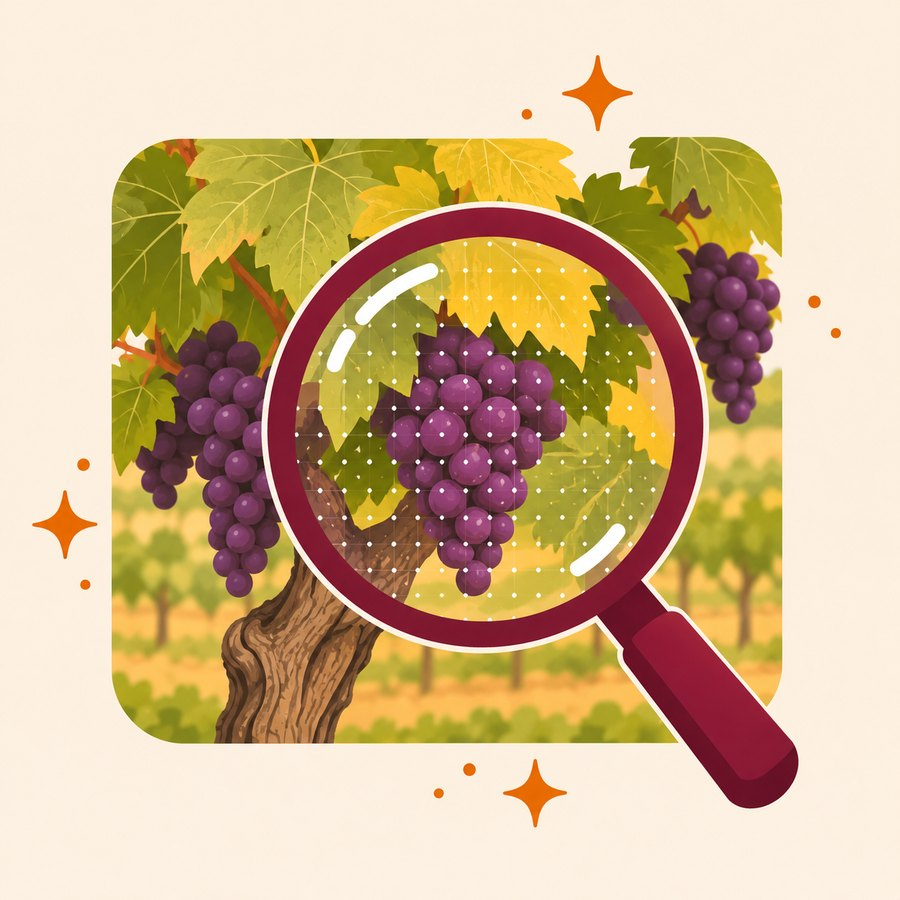
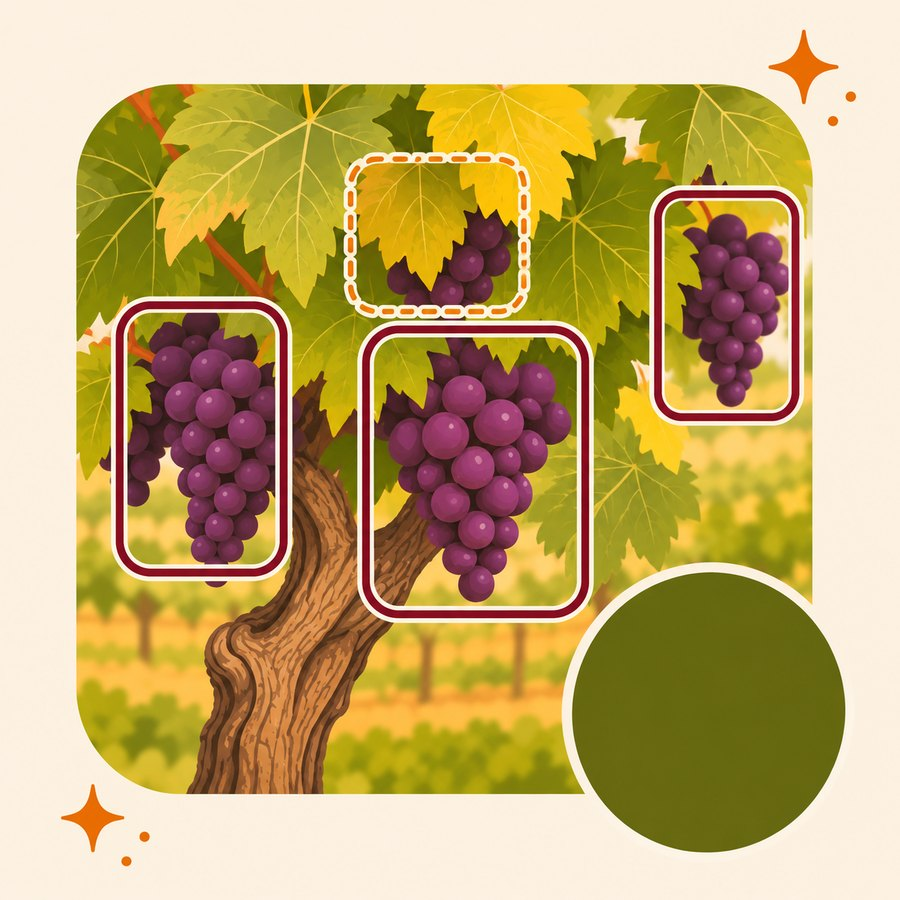

Prueba la IA con tu foto
Sube una foto de tu viñedo y descubre qué es capaz de ver la inteligencia artificial, y qué no.
Así funciona, en cuatro pasos

Haz una foto en el campo
Con el móvil, a una cepa o a una hoja.

Súbela a la plataforma
Eliges qué quieres analizar: racimos o mildiu.

La web la analiza
Un modelo de inteligencia artificial la examina en unos segundos, en tu propio dispositivo.

Recibe el resultado
Cajas sobre la foto, un número y una explicación en lenguaje claro.
Elige qué quieres probar
Contar racimos
La IA marca los racimos que ve en una foto de cepa y te dice cuántos son. Recuerda: solo cuenta los que se ven.
ProbarDetectar mildiu
La IA señala las zonas de una hoja o de una cepa que podrían tener mildiu. La decisión final siempre es de una persona.
ProbarTus fotos se quedan en tu navegador y no se envían a ningún sitio. El análisis se hace en tu propio dispositivo. Es un prototipo de investigación: puede equivocarse, sobre todo con fotos de móvil.